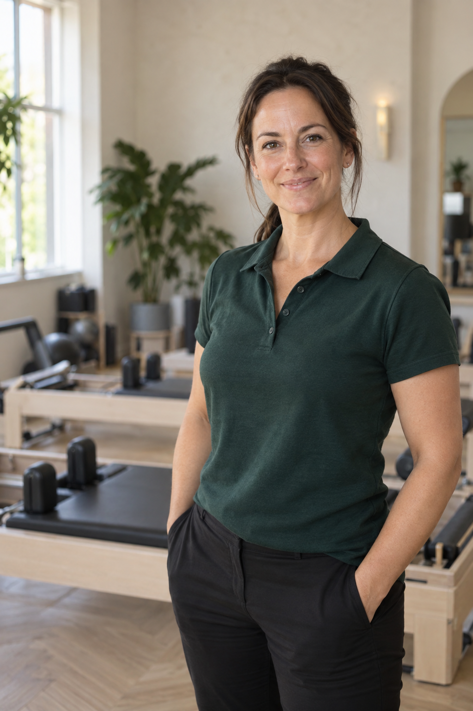

Clients
Personalised exercise support to help you move forward with confidence, build independence and achieve your goals.
Explore support →Physio-guided Pilates and exercise for recovery, pain, and everything after.
Move with
confidence
Safe and
supported
Real progress
in everyday life
“The bridge between physio
and moving forward”
Personalised exercise support to help you move forward with confidence, build independence and achieve your goals.
Explore support →Practical, evidence-based training for healthcare professionals to build skills and confidence in supporting patients through exercise.
Explore CPD →Supporting healthier, more confident workforces through tailored exercise and wellbeing solutions.
Register interest →IS THIS FOR ME?
You’ve finished treatment but don’t quite feel ready to exercise independently.
You want to get back to the gym, Pilates, sport or the activities you enjoy.
Pain, fatigue or flare-ups make it difficult to know how much you can safely do.
You’re worried about doing the wrong thing or pushing too far.
You want the confidence to exercise at home, in a gym, class or studio.

MEET KAZ
I’m Karlene, a specialist musculoskeletal physiotherapist with 16 years’ NHS experience and over a decade teaching Reformer and Mat Pilates.
I created The Physio Focus to bridge the gap between physiotherapy and independent exercise — helping people build strength, understand their bodies and get back to the movement they enjoy with confidence.
REAL STORIES. REAL PROGRESS.
“Kaz gave me the confidence to return to the gym after my knee surgery. I now train independently, feel stronger and more capable than I have in years.
“I was nervous about doing the wrong thing, but Kaz understood my history and tailored everything to me. I now have the knowledge and confidence to exercise on my own.
“Professional, supportive and genuinely empowering. Kaz helped me get back to playing golf and doing the things I enjoy.
YOUR FIRST STEP
Start with a 60-minute Physio Pilates assessment and we’ll work out the right next step for you.
Book your initial assessment →£80 · 60 minutes